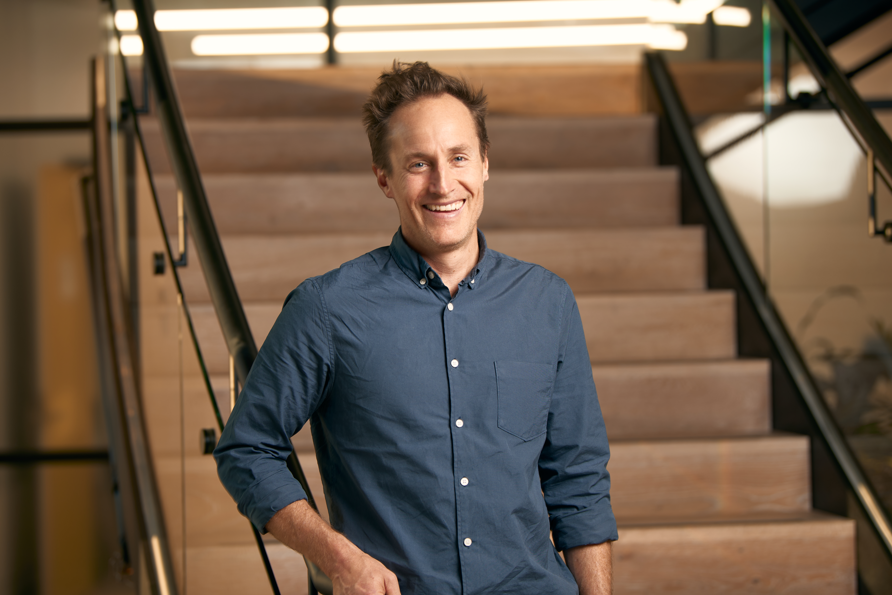

Every firm has processes that are too specific for off-the-shelf software to solve well. I build bespoke tools tailored to exactly how your team works. Delivered in weeks, not months.
Generic software forces your team into workarounds. The extra spreadsheet, the manual copy-paste step, the "that's just how we've always done it." Those gaps exist because the software wasn't built for how you actually work.
AI-assisted development has changed the economics. Custom software that used to need a large team and a six-figure budget can now be built by one person who understands your problem, in weeks. That's what makes bespoke tools practical for firms like yours.
Most developers don't understand financial services. Most product leaders don't write code. I've spent my career in both worlds.
UX Australia · Design Conference
I start by understanding how your team actually works, then build tools that fit that reality.
I sit with your team and map the real process: the workarounds, the manual steps, the things that take longer than they should.
A working version of the tool in days, not a proposal document in weeks. You see your workflow as working software and we refine from there.
I use AI where it genuinely solves a problem, and conventional code where reliability and compliance matter more. The right tool for the job.
Not a demo. A tool your team uses daily. Secure, reliable, and designed to look professional in front of your clients. Fixed-price milestones.
Each of these was built from scratch around a specific person's or team's workflow. Not configured from a platform or adapted from a template.
Visual maps are a critical tool for financial planners. They help explain where a client stands and get everyone on the same page. But putting them together using existing software was a painful manual process, taking hours for each client. I built a tool that takes an existing data export and automatically generates an interactive mind map of the client's full financial picture (entities, assets, liabilities, risk flags) in seconds. I then added a projection engine that models income and asset growth over 20+ years.
The tool parses the exact file format the planner already exports from their existing software. It understands trusts, companies, SMSFs, personal assets, liabilities, and family structures specific to Australian financial planning. Compliance was a core requirement, so all processing happens locally with no data sent to external services. The same approach can be applied to other data sources the firm already uses, including accounting exports and client presentation workflows.
Service Seeking connects customers with tradespeople, but their existing system produced low-quality leads. Customers filled out a basic form, and jobs went to whoever responded fastest rather than the best match. I built an AI concierge that has a proper conversation with the customer to understand the job, then intelligently matches and ranks trades by quality, proximity, and fit.
The system handles the full journey: conversational job scoping, photo analysis, pricing estimates, trade outreach via WhatsApp, availability confirmation, and CRM tracking. What started as a painting pilot is now expanding across the full Service Seeking platform.
Grant applications are high-value but painfully complex. Dozens of fields across multiple pages, strict word limits, clunky portals, and the same career history rewritten from scratch every time. I built a tool that reads the entire form, classifies every question, and reframes them into a simple step-by-step workflow. Fields the system can answer from the applicant's pre-loaded profile are auto-filled; fields that need human input are surfaced clearly with guided prompts. What used to take hours becomes a focused 15-minute review.
The principle here extends well beyond music grants. Any process where professionals repeatedly fill in complex forms using the same underlying information (compliance filings, regulatory submissions, annual returns, audit questionnaires) is a candidate for the same approach. The tool understands both the applicant's profile and the form's requirements, and bridges the two. For an accounting or advisory firm, the same architecture could turn hours of repetitive compliance work into a guided, pre-filled workflow.

Tell me about the manual step, the repetitive task, the workaround that's become part of the routine. I'll tell you what a purpose-built tool would look like, and how quickly it could be ready.
Get In Touch →